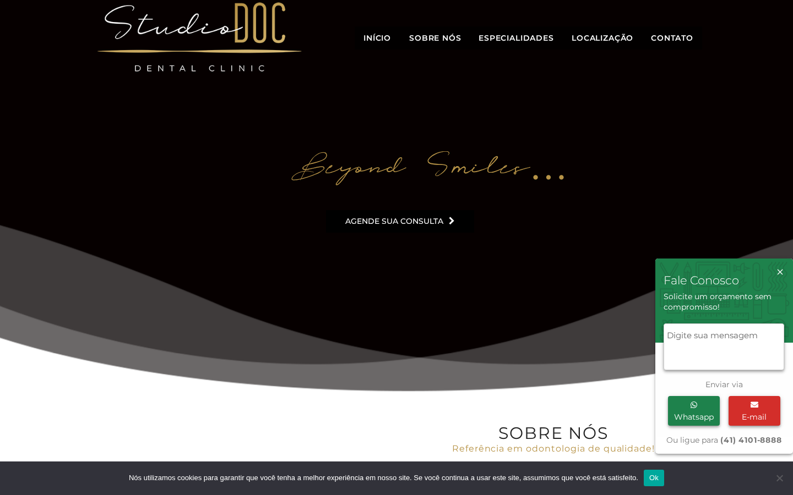
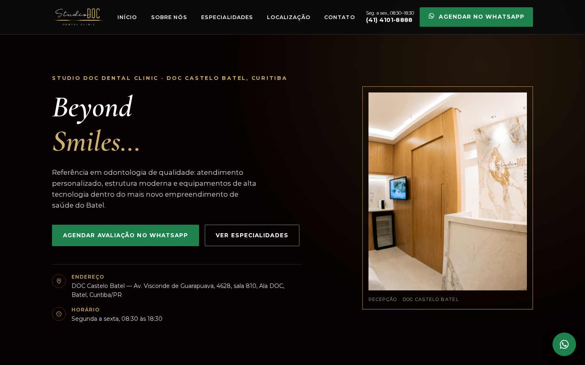
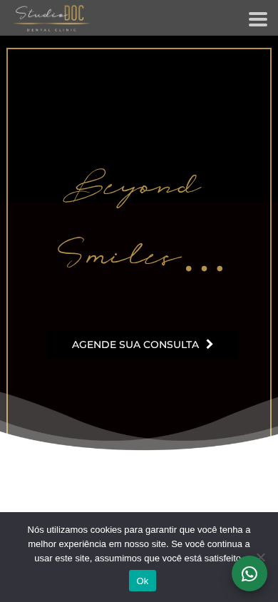
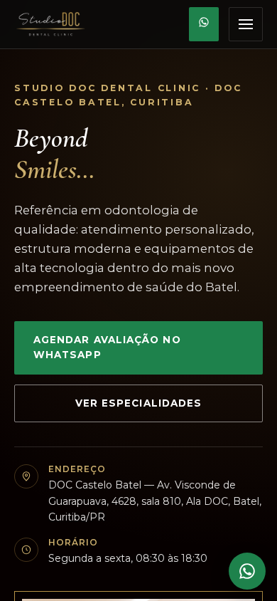

Site atual vs. conceito proposto
Capturas de tela reais, no mesmo viewport (1440×900 desktop / 390×844 mobile), lado a lado — sem retoque.

studiodoc.com.br, capturado em 2026-07-17. Chat flutuante e barra de cookies concorrem com o hero.

index.html deste conceito, mesmo viewport, capturado localmente.


Três problemas, três melhorias correspondentes
Selecionados pelo impacto direto na taxa de agendamento — não pela facilidade técnica.
Problema
O botão de WhatsApp do widget flutuante tem href vazio no DOM ao vivo — o principal canal de contato rápido não funciona sem depender de um script de terceiro carregar corretamente.
Melhoria proposta
Um único caminho de agendamento dominante: botão de WhatsApp com link direto e funcional (api.whatsapp.com/send?phone=...) e texto pré-preenchido, repetido de forma consistente no cabeçalho, no hero, na seção de contato e como botão flutuante — sem dependência de scripts externos.
Problema
Todos os CTAs "Agendar consulta/avaliação" (7+ ocorrências) levam apenas à página genérica de contato — sem seleção de tratamento, profissional ou link direto de WhatsApp; a home também não tem meta description nem H1 detectável, e 11 de 29 imagens não têm texto alternativo.
Melhoria proposta
Estrutura semântica correta (H1 único, meta description, alt text em toda imagem de conteúdo), navegação por âncora direta a cada especialidade e profissional, e CTA consistente que já leva ao WhatsApp com contexto — sem duplicar o corpo clínico na marcação.
Problema
A página de contato expõe duas vezes a instrução técnica em inglês "Please leave this field empty" (artefato de desenvolvimento do formulário); na home, chat flutuante e barra de cookies se sobrepõem ao hero simultaneamente.
Melhoria proposta
Hero limpo, sem sobreposições de widgets, e nenhum artefato técnico visível ao paciente — a experiência de primeira impressão fica inteiramente sob controle editorial da clínica.
Entregáveis e dependências
Entregáveis deste conceito
index.html— site de produção, uma página, seções âncorastyles.css— sistema visual completo, responsivoscript.js— menu mobile acessível, sem dependências externasassets/— imagens e fontes verificadas, hospedadas localmenteSOURCE_MANIFEST.md— toda fonte, URL e fato usadoBUILD_REPORT.md— comandos e resultados de verificação
Dependências para publicação
- Aprovação do corpo clínico sobre a cópia e o recorte de imagens usados
- Confirmação do canal oficial de WhatsApp que deve receber os agendamentos
- Decisão sobre manter WhatsApp como único caminho de agendamento ou integrar uma agenda/calendário no futuro
- Acesso a hospedagem e DNS de studiodoc.com.br para publicação, quando aprovado
- Revisão final da clínica sobre nomes, CRO e especialidades antes de qualquer publicação
Cronograma proposto
Descoberta e verificação de marca
Leitura das páginas oficiais, coleta de fatos e ativos com fonte registrada.
ConcluídoConstrução do conceito
Produção de index.html, proposal.html e sistema visual a partir da marca verificada.
Revisão da clínica
Validação de cópia, fotos e CTAs pelo corpo clínico antes de qualquer publicação.
AguardandoPublicação
Corte de DNS e substituição do site em produção, mediante aprovação explícita.
AguardandoPróximo passo
Uma chamada de 20 minutos com a clínica para validar as três prioridades acima, confirmar o número de WhatsApp que deve receber os agendamentos e aprovar (ou ajustar) a cópia e as imagens antes de qualquer publicação. Nenhuma alteração é publicada sem essa aprovação explícita.
Apêndice técnico — detalhes da auditoria
- Widget de WhatsApp flutuante sem destino: o botão
#floating-btn-open/.btn-whatsapp-convesiondepende de um script externo (agenciaalper.com.br/codes/api/api.js) para atribuir a URL de clique; sem esse script carregar com sucesso, o botão não faz nada. - CTAs de agendamento: todas as ocorrências de "AGENDAR CONSULTA" / "AGENDAR AVALIAÇÃO" no HTML ao vivo apontam para
https://studiodoc.com.br/contato/; apenas o link de rodapé usa um endereço de WhatsApp funcional (api.whatsapp.com/send?phone=554141018888). - SEO/estrutura: a resposta HTML bruta da home (verificada em 2026-07-16/17) não contém
<meta name="description">; nenhum<h1>foi encontrado na árvore renderizada. - Corpo clínico duplicado: a seção "CORPO CLÍNICO" contém dois blocos idênticos (
.desktope.mobile) sempre presentes na marcação, dobrando o conteúdo textual da seção para leitores de tela e mecanismos de busca. - Artefato técnico visível: o rótulo do campo honeypot do Contact Form 7 ("Please leave this field empty.") aparece como texto visível associado ao formulário em
/contato/.